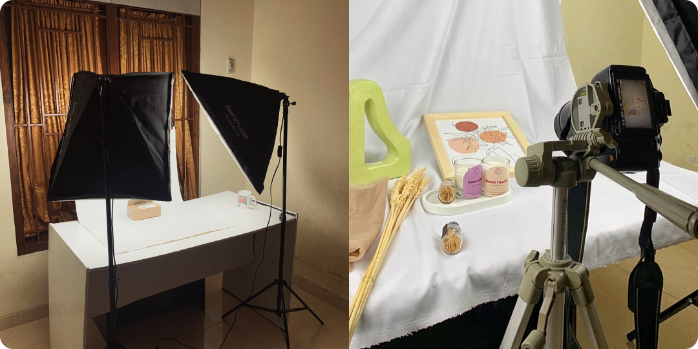
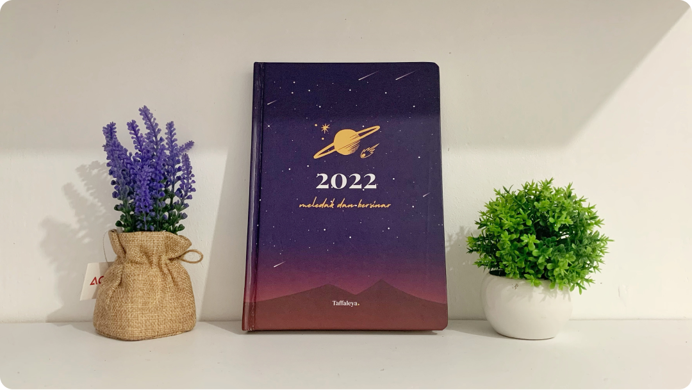
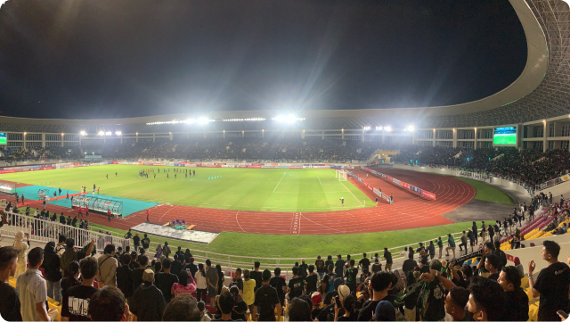

Experience
Hai Salam Kena! Namaku Rahmat Nur Kholis, biasa dipanggil Kholis. Aku lahir di Yogyakarta tepat pada tahun 2001.
Aku merupakan anak ke-lima dari lima bersaudara. Saat ini aku sedang menempuh semester 5 di Universitas Amikom Yogyakarta
program studi Informatika. Selain itu, aku saat ini juga sedang menjalain Studi Independen di Dicoding Academy. Semoga aku bisa
mendapat ilmu yang banyak dan lulus dengan maksimal ya!
Experience
Pada tahun 2022 ini, aku udah beberapa kali pengalaman yang seru contohnya berikut ini!
Membuat Mini Studio!

Alhamdulillah aku bisa mengawali tahun 2022 ini dengan lumayan baik. Pada awal bulan Januari aku bisa mewujudkan mimpiku untuk
membuat mini studio. Mini studio ini nantinya akan aku jadikan usaha sampingan, karena aku juga hobby foto-foto gitulah.
Farm House Lembang

Pada tahun 2022 ini, aku bersyukur dapat kembali membuat yearly planner sendiri lagi.
Observatorium Bosscha

Alhamdulillah aku bisa mengawali tahun 2022 ini dengan lumayan baik. Pada awal bulan Januari aku bisa mewujudkan mimpiku untuk
membuat mini studio. Mini studio ini nantinya akan aku jadikan usaha sampingan, karena aku juga hobby foto-foto gitulah.
Experience
Hai Salam Kena! Namaku Rahmat Nur Kholis, biasa dipanggil Kholis. Aku lahir di Yogyakarta tepat pada tahun 2001.
Aku merupakan anak ke-lima dari lima bersaudara. Saat ini aku sedang menempuh semester 5 di Universitas Amikom Yogyakarta
program studi Informatika. Selain itu, aku saat ini juga sedang menjalain Studi Independen di Dicoding Academy. Semoga aku bisa
mendapat ilmu yang banyak dan lulus dengan maksimal ya!